02 / A PRIVATE LANDSCAPE
ON THE EVE
OF BEING
UNDONE
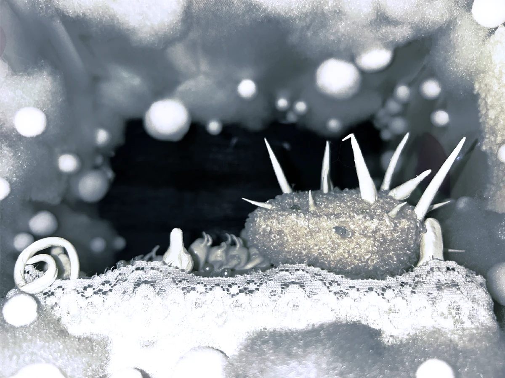
Experimental Art / Installation / Mixed MediaA MEMORY, SLOWLY ↓
01 / THE OBJECT
它有一个名字。
阿贝贝。
一只白色枕头。
一个陪伴很久的物件。
一些还没有离开的童年。
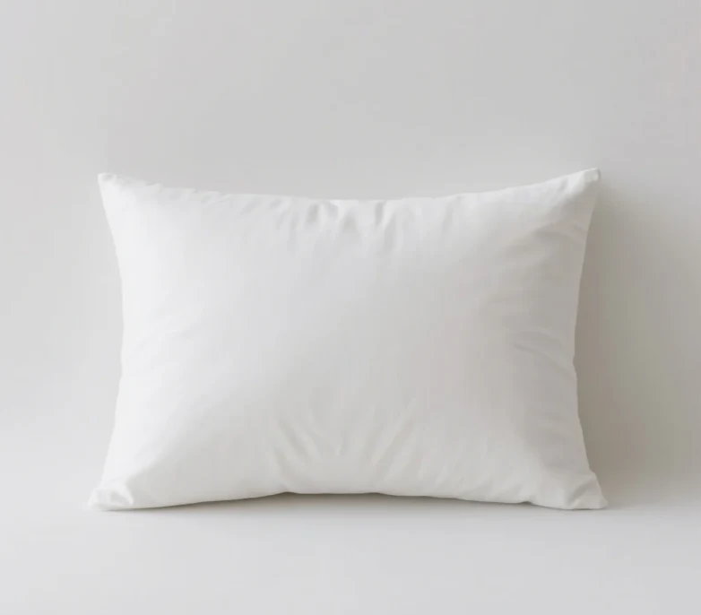
有些依恋，
比我们更早学会留下。
02 / COMFORT, THEN SHAME
COMFORT与SHAME
为什么一个带来安慰的依恋物，
在成年之后，会逐渐产生羞耻感？
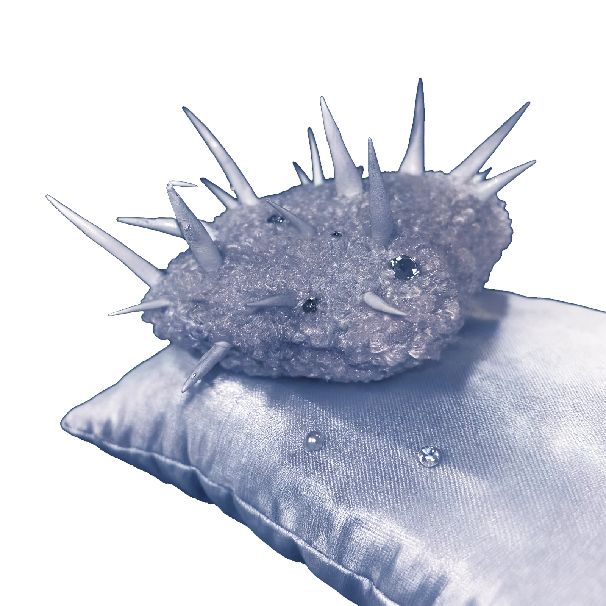
柔软没有消失。
它只是开始保护自己。
03 / MEMORY ARCHIVE
留在这里的东西。
轻触一个物件，打开一页记忆。
MEMORY IMAGERY / 物件意象来自项目原有素材
04 / WHEN SOFTNESS GROWS SPIKES
柔软，
也会长出尖刺。
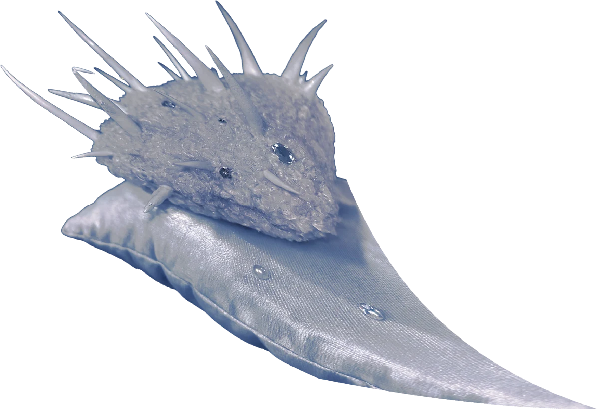
COTTON
LACE
CLAY
MIRROR
SPIKES
尖刺将这种柔软，变成一道边界。
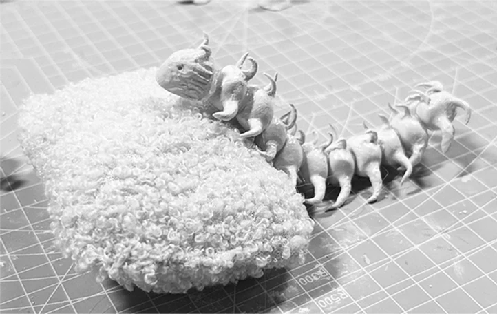
05 / ON THE WORKTABLE
那些尚未成形的时刻。
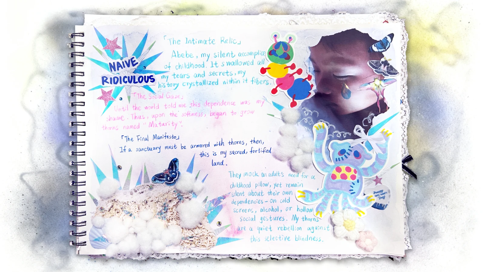
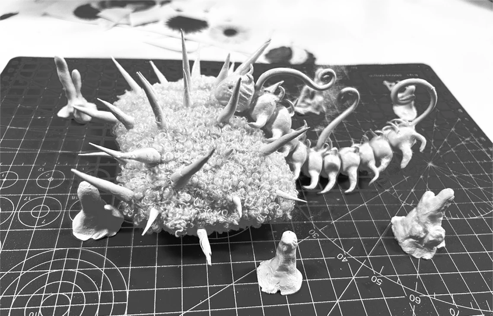
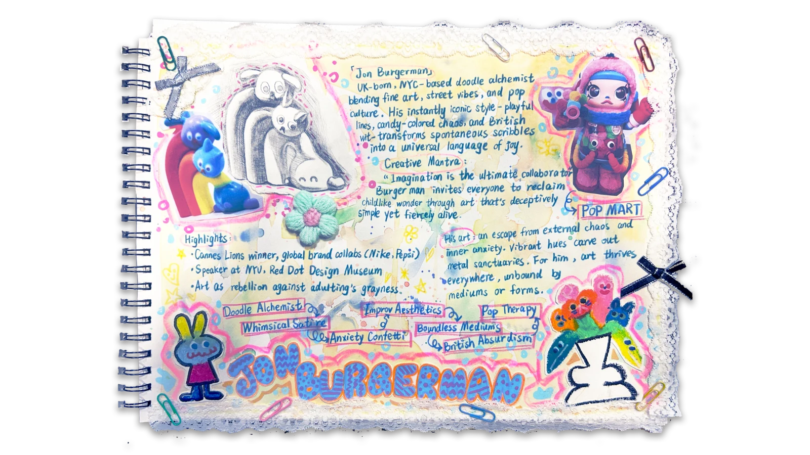
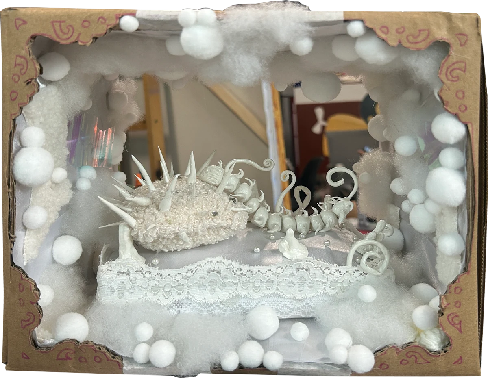
06 / FINAL INSTALLATION
A place to hold
what remains.
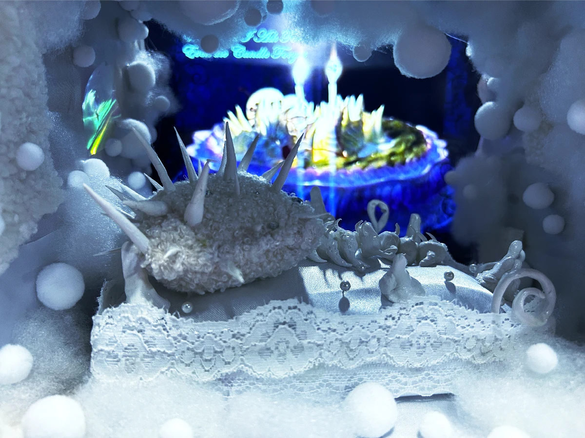
07 / THE FILM
记忆有自己的声音。
On the Eve of Being Undone
点击播放 / SOUND ON
08 / VIRTUAL EXHIBITION
把私人记忆，
暂时放进一个空间。
Spatial Proposal / 虚拟展陈效果图，非实际落地展览记录。
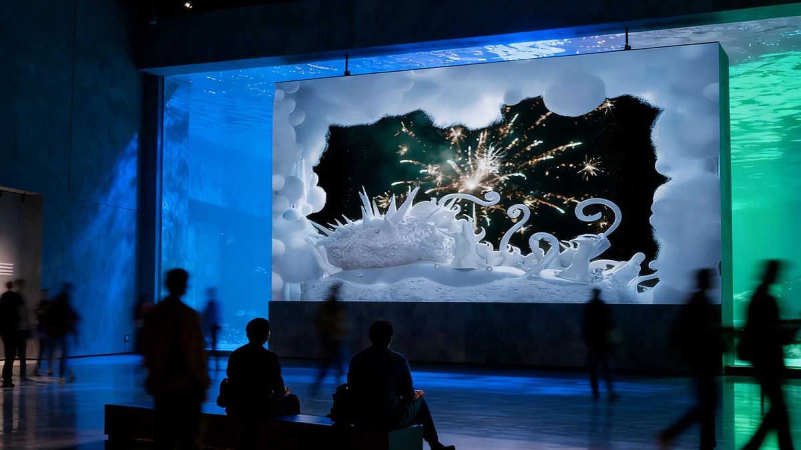
ON THE EVE OF BEING UNDONE
长大以后，
我仍想为柔软留一个位置。